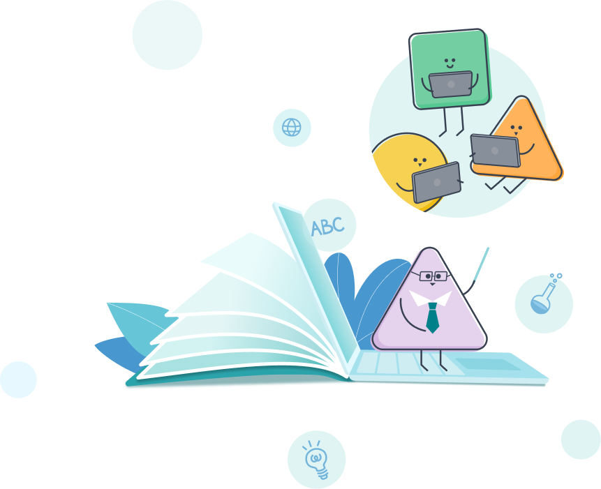
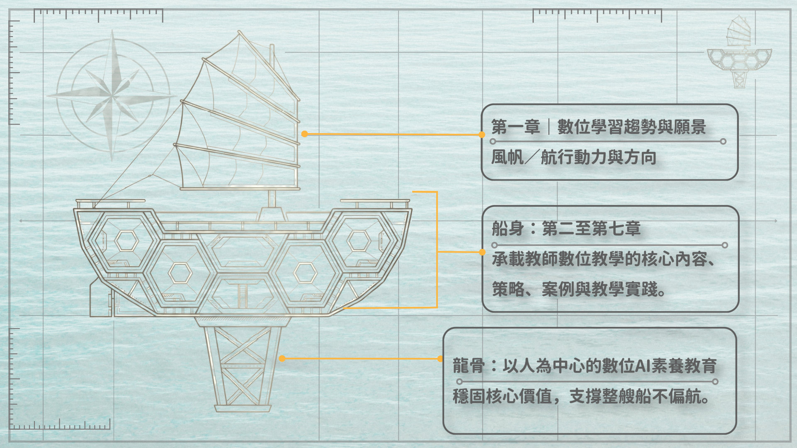
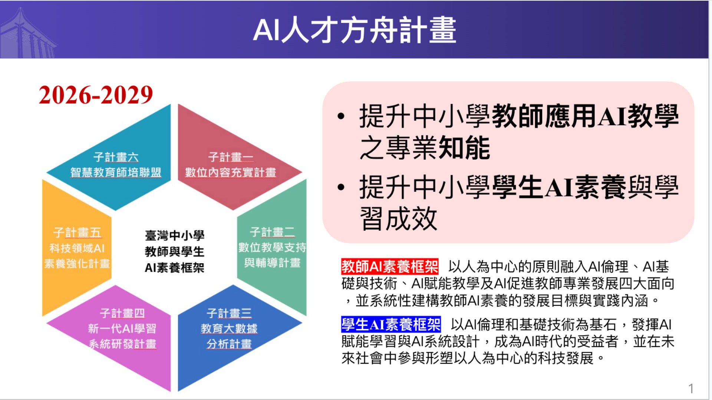
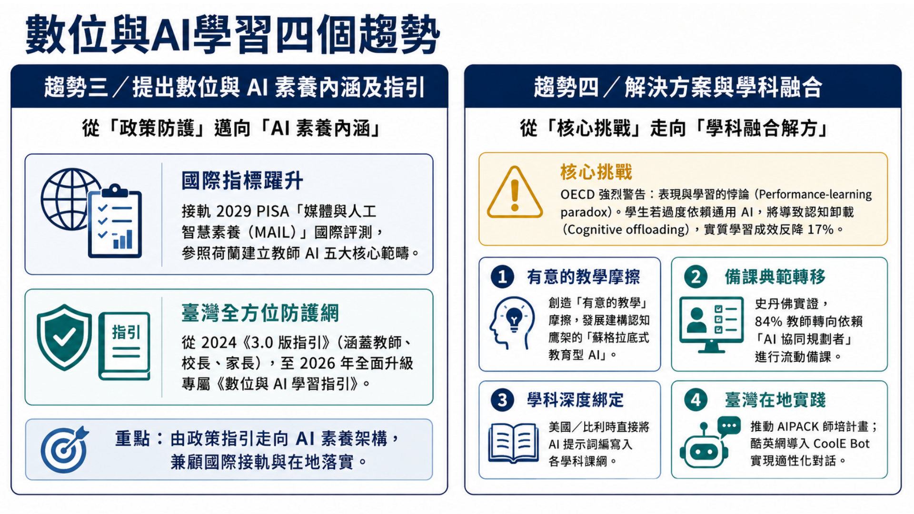
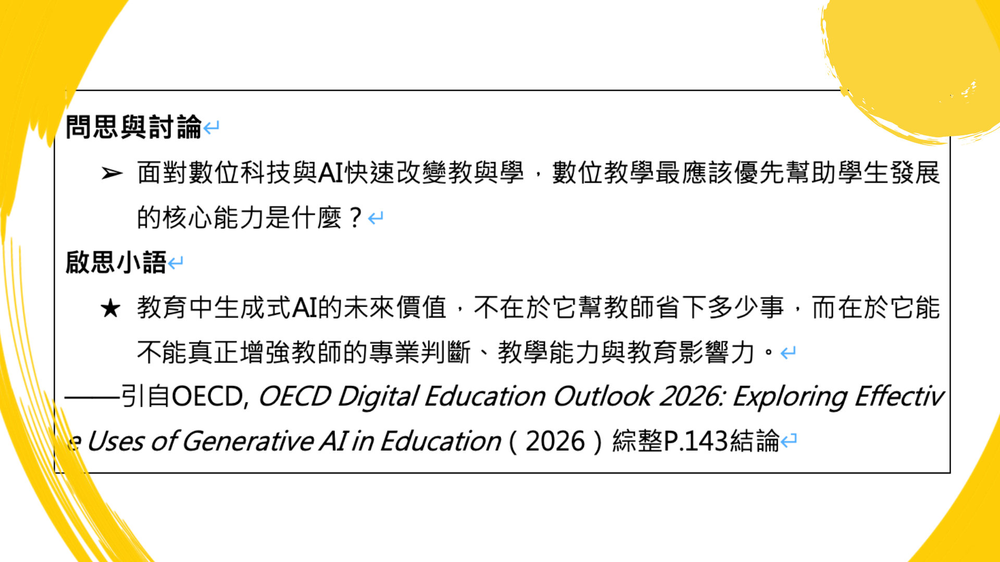
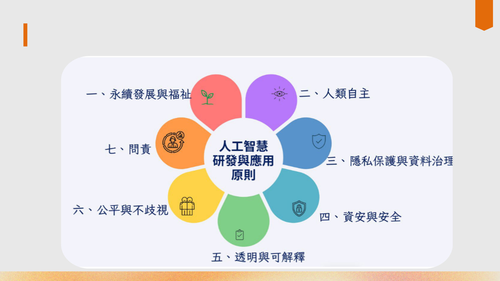
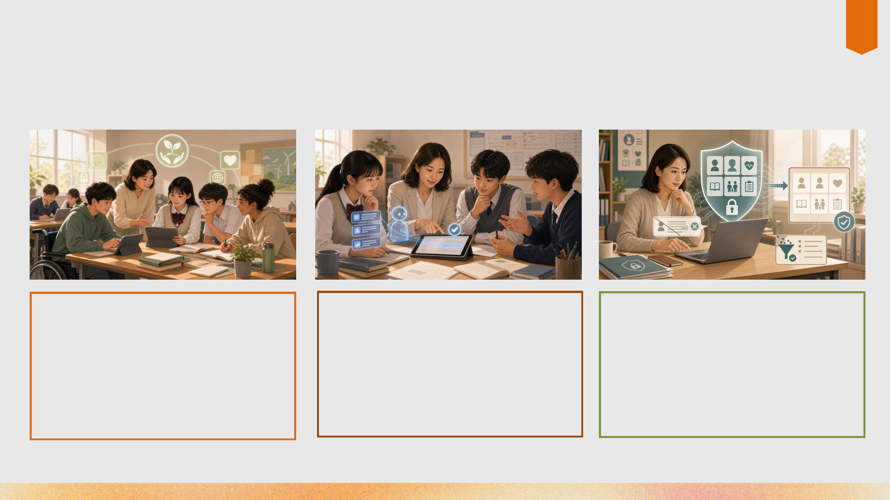
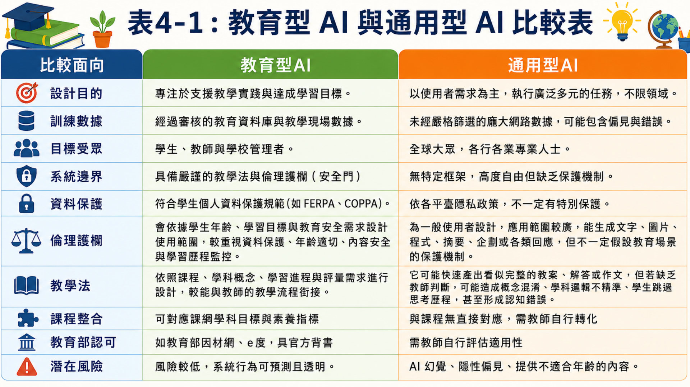
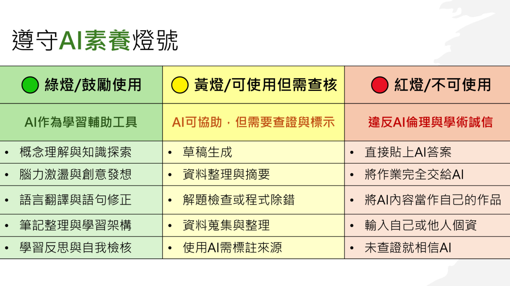
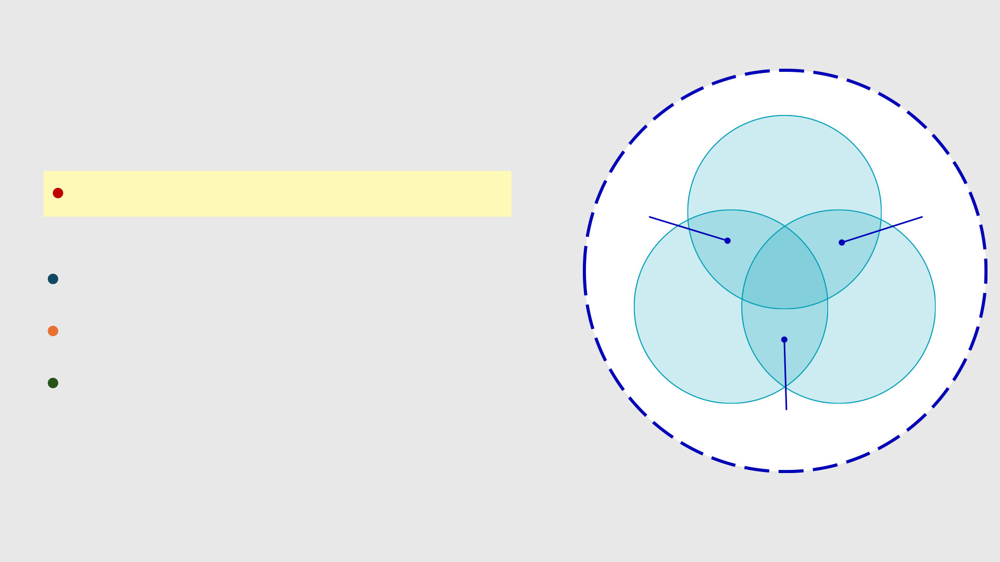

115中小學數位與AI教學指引六特色
導入人工智慧代理人（AI Agent）
對準AI素養框架與AI人才圖像
強調以人為中心的思維
AI從工具轉化爲學習設計協作夥伴
提升AI賦能教學
以AI促進教師專業發展

公版 模組一 p.10
3

數位與AI教學指引架構
13
公版 模組一 p.13
4

公版 模組一 p.8
5

公版 模組一 p.16
6
臺北補充
臺北補充｜酷AI
臺北的 AI 學習平臺：酷AI 五大 AI 神器

AI 小幫手：蘇格拉底式學習引導、個別化輔導、24 小時學習陪伴
AI 助教：一鍵產出教材（試題、教材、素材、互動影片）
AI 寫作／翻譯：作文自動批改、中譯英
AI 口說／圖鑑：口說、圖像作業、Scratch 程式自動批改
精準評量：學習診斷儀，3 級到 9 級
資料來源｜《114 酷AI 自主學習手冊與教學手冊》第零章（臺北市政府教育局 114.12）
7

20
P47
公版 模組一 p.20
8

公版 模組一 p.26
9
23
第二階段：負責任使用 AI
負責任使用生成式 AI 七大原則
pp161-166
26
公版 模組二 p.26
11

24
AI
負責任使用⽣成式
的七⼤原則
公版 模組二 p.27
12

25
AI
負責任使用
七原則
以人為本與⾃主判斷
隱私保護與資料治理判斷
永續發展與福祉
決定權始終在人類手上。
AI 可以提供
AI應妥善保護個人資料隱私，避免資
AI 應兼顧社會公平及環境永續。
AI 的
建議、分析與草稿，但教學判斷、學
料外洩風險，並採用資料最小化原
使用應思考是否真正促進學生學習、
生理解、評量決定與價值引導，仍應
則。
不論教師或學生，都不應該將個
減少學習落差，並培養學生負責任、
由教師與學生共同承擔。
人資料輸入 AI 工具中。
節制且有目的地使用科技。
公版 模組二 p.28
13

26
AI
負責任使用
七原則
資訊安全與使用安全
透明與可解釋
公平與不歧視
可問責性與誠信
AI 產出應適當資訊揭露或標
AI 應用過程應建立資訊安全
AI 應用應盡可能避免演算
AI應確保承擔相應責任，對
記，以評估可能風險，了解
防護措施，防範威脅與攻
法產生偏差及歧視風險。
教
高風險AI應用，也應明確責
相關權益之影響。
在教學情
擊，確保系統穩健性與安全
師需引導學生辨識AI可能再
任歸屬及歸責條件。
在教育
境中，透明不只是有沒有用
性。
教師使用AI時，應注意
製性別、族群、文化、職
現場，AI錯誤不能成為逃避
AI，而是要能說明如何使用
「工具安全」、「內容安全」
業、身心特質或社經背景偏
責任的理由。
AI、AI協助哪一部分、哪些
與「學生身心安全」。
見。
內容經過查證與修正」。
公版 模組二 p.29
14
115年中小學教師數位與AI教學指引
第四部分 聚焦教師數位與AI教學實務(P68-P89)
使用AI前：釐清工具類型、 學生年齡適切性、資料隱私、平臺安全與學習目標。
關注學生是否出現「學習外包」或「認知卸載（Cognitive Offloading）」
課堂中的AI應被定位為「輔助理解」與「促進反思」的鷹架。
明確設計任務邊界、提問規則、查證機制與反思要求。
AI支持學生深度學習，而非取代學習歷程。
公版 模組三 p.2
16

公版 模組三 p.8
17

公版 模組三 p.9
19

進而發展AIPACK
AIK
人工智慧知識
AIPK
AICK
Artificial Intelligence人工智慧
人工智慧教學
人工智慧學科
知識
知識
Technological Knowledge 科技知識
AIPACK
PK
CK
Pedagogical Knowledge 教學知識
教學知識
學科知識
Content Knowledge 學科知識
PCK
教學學科知識
AIPACK示意圖
資料來源：編修自Koehler(2012)
5
公版 模組三 p.13
20

數位科技(AI/e度)
輔助教師教學 +領域內容+教學策略
教育部因材網輔助四學
學生自學
學生於學習平臺觀看教學影片、做練習題與回答老師提問
進行「自學」，並發現個人的難點錯誤。
組內共學
小組成員利用學習平臺中，老師指派討論內容進行觀點分
享、討論達到小組共識。
組間互學
各小組將討論結果上傳大屏或學習平臺進行小組發表並與
其他小組成員互動、釋疑。
教師導學
教師利用學生的學習結果，進行難點、概念總結與反思。
7
公版 模組三 p.15
21
臺北接點
這份教案用到的酷AI：自學包＋後台數據


資料來源｜《2026 酷AI 系統新增功能介紹》
30